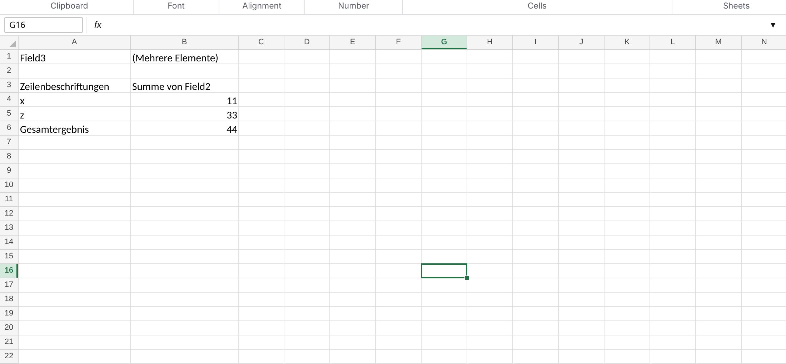
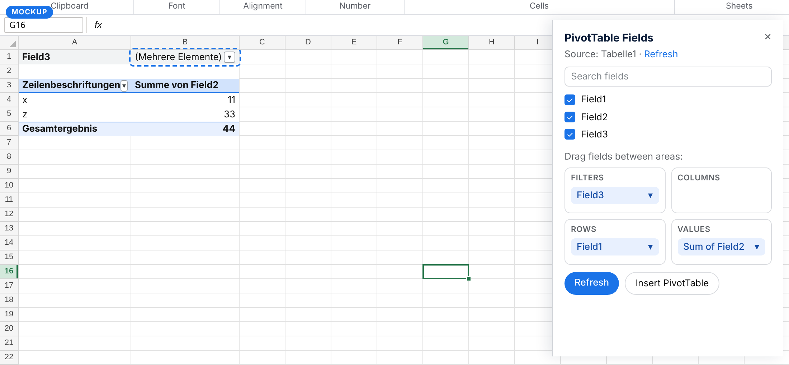
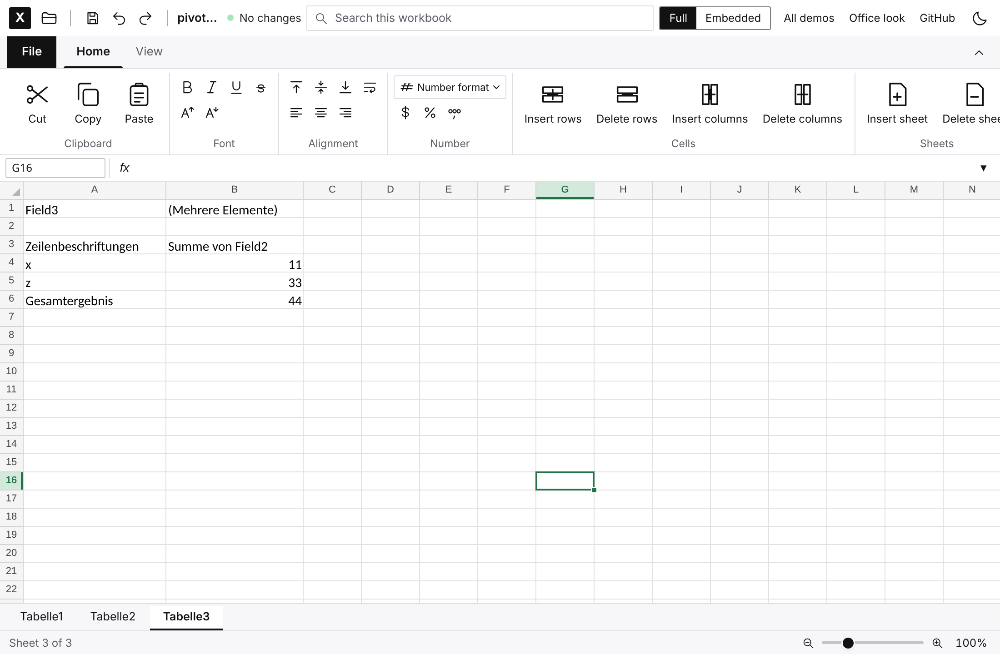
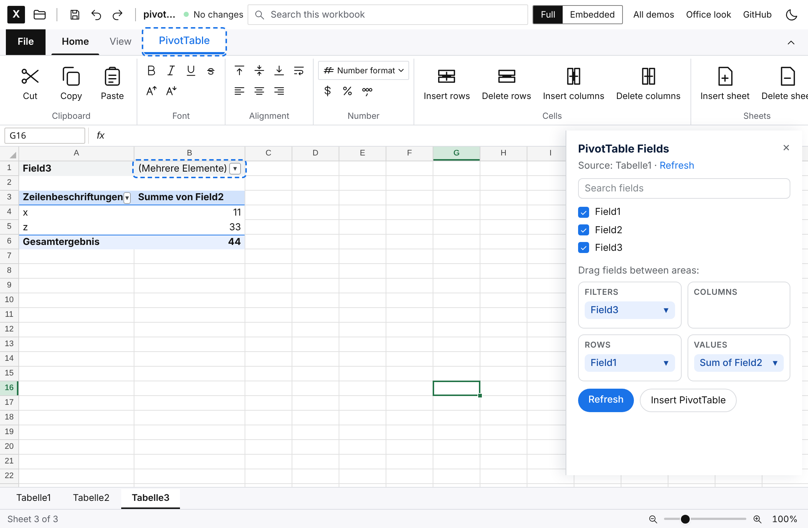

PivotTables: show them as real pivots, refresh them, and build new ones from a field list
Approved 2026-11-24 (👍). Strategic multi-milestone bet; queued for the nightly build behind host-API priority work. Build lands as phased draft PRs (milestone 1 first).
Approve: tap 👍 on the issue · Decline: tap 👎
Close-up of the change




Full screen


Today: the corpus file poi-ExcelPivotTableSample.xlsx (sheet Tabelle3) opens with its pivot as plain cells, with no pivot styling, field buttons or filter dropdown, and no way to refresh it or make a new one.


Mockup: the same pivot painted as a pivot (header band, grand-total row, filter and row-label dropdowns), a PivotTable tab, and a PivotTable Fields pane with Filters / Columns / Rows / Values areas, Refresh and Insert PivotTable.
Tap an image to open it full size.
Why
PivotTables are how most Excel users summarise data, and every serious competitor has them: Excel, Google Sheets, OnlyOffice and LibreOffice/Collabora. Nitro keeps pivots intact on save, but shows them as plain cells. The engine's own warning says they are 'kept on save but are not refreshed or shown as pivot tables'. The formula engine and dependency graph already exist to compute the aggregates. This bet makes pivots first-class in three shippable steps, then opens them to host apps so an AI assistant can build a summary the user can inspect and save.
Who it wins
Users first: analysts, finance and ops teams, the same people who open the big workbooks. Then embedding developers: an agent asked for 'total by region' can create a real, refreshable pivot instead of pasting static numbers. Pivots are the largest everyday Excel feature Nitro doesn't have yet.
Phased plan
Each milestone ships on its own.
- M1 · Show pivots faithfully (about 1 week)Read pivotTable and pivotCache parts, then paint pivot styles, row and column headers, subtotals, grand totals, field buttons and the page-filter '(Multiple Items)' dropdown. Read-only.
- M2 · Refresh, filter, expand and collapse (1–2 weeks)Recompute from the worksheet source (Sum, Count, Average, Min, Max), with field filters and collapsible groups. Save writes cache records that Excel opens without a repair prompt.
- M3 · Insert PivotTable + field list (about 2 weeks)Insert > PivotTable from a selected range (reusing the Insert tab from approved #606), a PivotTable Fields pane with Filters / Columns / Rows / Values areas, drag to rearrange, live update, one undo step per change.
- M4 · Host API for pivots (3–5 days)getPivots(), applyEdit ops pivot.create and pivot.set-fields, and a nitro-pivot-change event, typed and documented for AI agents.
Evidence
- Today: poi-ExcelPivotTableSample.xlsx (in the test corpus) shows its pivot on Tabelle3 as plain cells (screenshot above, live demo at v0.2.0, taken 2026-11-24).Source: fixtures/real/xlsx/poi-ExcelPivotTableSample.xlsx; live demo
- The engine warns on open: 'Pivot tables are kept on save but are not refreshed or shown as pivot tables.'Source: rs/crates/nitro-xml-xlsx/src/workbook.rs, main ee9789c
- The calculation base exists: formula parser, dependency graph and function library (#71–#77, all closed).Source: issues #71–#77
- No existing issue or proposal covers pivots. Approved #606 (Insert tab + charts) and #577 (Sort & Filter) add the Insert tab and filter UI this bet reuses.Source: proposal issues #540–#620, BACKLOG.md
- Competitors: Excel, Google Sheets, OnlyOffice and LibreOffice/Collabora all create and refresh pivot tables.Source: competitor feature sets
Definition of done
- poi-ExcelPivotTableSample.xlsx and the other corpus pivots render with pivot style, headers, totals, field buttons and filter dropdowns, checked by a pixel test against an Excel-rendered reference.
- Refresh recomputes after source edits, and filter and collapse work. The saved file opens in Excel with no repair prompt and refreshes to the same values.
- Insert > PivotTable on a range opens the field list. Dragging fields between Filters, Columns, Rows and Values updates the pivot live, and Ctrl+Z undoes each change.
- Host API: getPivots(), pivot.create and pivot.set-fields ops, and a nitro-pivot-change event, typed and documented.
- Ribbon groups stay at 2 rows or fewer. Eager loader under 17,408 B brotli. All required checks green.
Approve: tap 👍 on the issue · Decline: tap 👎